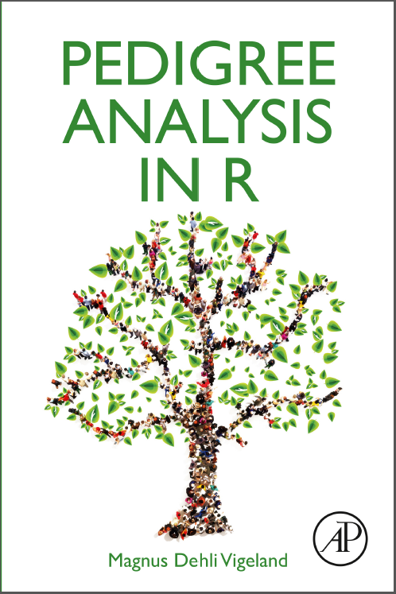

Publications featuring the pedsuite
publications.RmdBook
The book Pedigree Analysis in R (Academic Press, 2021) is based on the pedsuite and contains detailed explanations and examples of how to use the different packages.

Papers
The following is a list of publications featuring pedsuite packages. If you know of others, please let me know!
pedsuite (multiple packages)
- A Da Silva Correia, I Laginha, et al. Pedigree analysis and genetic inheritance of fatal familial insomnia (FFI) in a Portuguese multigenerational family. J Neurol, 2025.
- T Egeland, MD Vigeland. Kinship cases with partially specified hypotheses. Forensic Sci Int: Genet, 2025.
- H Aanes, MD Vigeland, et al. Heating up three cold cases in Norway using investigative genetic genealogy. Forensic Sci Int: Genet, 2025.
- M Kruijver, J-A Bright. A tool for simulating single source and mixed DNA profiles. Forensic Sci Int: Genetics, 2022.
- NE Altınışık, DD Kazancı, et al. A genomic snapshot of demographic and cultural dynamism in Upper Mesopotamia during the Neolithic Transition. Science Advances, 2022.
dvir
- MD Vigeland, T Egeland. Joint DNA-based disaster victim identification. Sci Rep, 2021.
forrel
- Ø Bleka, MD Vigeland, P Gill. EFMex: using EuroForMix to evaluate DNA mixtures with multiple persons of interest. Forensic Sci Int: Genet, 2025.
- M Colucci, JH Wetton, et al. Evaluating genome-wide and targeted forensic sequencing approaches to kinship determination. Forensic Sci Int: Genet, 2025.
- FL Marsico, I Caridi. Incorporating non-genetic evidence in large scale missing person searches: A general approach beyond filtering. Forensic Sci Int: Genetics, 2023.
- M Iungman, S Biagini, M Canteros et al. Empirical validation of a family-member prioritization approach to maximize statistical power in missing person cases. Forensic Sci Int: Genetics Suppl Series, 2022.
- A Chernomoretz, F Marsico, et al. Bayesian networks for DNA-based kinship analysis: Functionality and validation of the GENis missing person identification module. Forensic Sci Int: Genetics Suppl Series, 2022.
- HK Brustad, M Colucci, MA Jobling NA Sheehand, T Egeland. Strategies for pairwise searches in forensic kinship analysis. Forensic Sci Int: Genetics, 2021.
- FL Marsico, MD Vigeland, T Egeland, M Herrera Piñero. Making decisions in missing person identification cases with low statistical power. Forensic Sci Int: Genetics, 2021.
- HK Brustad, MD Vigeland, T Egeland. Pairwise relatedness testing in the context of inbreeding: expectation and variance of the likelihood ratio. Int J Legal Med, 2020.
- MD Vigeland, FL Marsico, M Herrera Piñero, T Egeland. Prioritising family members for genotyping in missing person cases: A general approach combining the statistical power of exclusion and inclusion. Forensic Sci Int: Genetics, 2020.
- HK Brustad, T Egeland. The impact of ignoring inbreeding in pairwise kinship evaluations. Forensic Sci Int: Genetics Suppl Series, 2019.
- MD Vigeland, T Egeland. Handling founder inbreeding in forensic kinship analysis. Forensic Sci Int: Genetics Suppl Series, 2019.
IBDsim /
ibdsim2
- A Tillmar, D Kling. Comparative study of statistical approaches and SNP panels to infer distant relationships in forensic genetics. Genes, 2025.
- C Cavagnino, G Runfeldt, et al. Unearthing who and Y at Harewood Cemetery and inference of George Washington’s Y-chromosomal haplotype. iScience, 2024.
- H Vinje, HK Brustad, et al. Classification of breed combinations for slaughter pigs based on genotypes—modeling DNA samples of crossbreeds as fuzzy sets from purebred founders. Front Genet, 2023.
- VM Narasimhan, R Rahbari, A Scally, et al. Estimating the human mutation rate from autozygous segments reveals population differences in human mutational processes. Nat Commun, 2017.
- S Steinberg, S Gudmundsdottir, G Sveinbjornsson, et al. Truncating mutations in RBM12 are associated with psychosis. Nat Genet, 2017.
paramlink /
paramlink2
- Ø Bleka, L Prieto, P Gill. EFMrep: An extension of EuroForMix for improved combination of STR DNA mixture profiles. Forensic Sci Int: Genetics, 2022.
- Z Bai, N Zhang, JLiu, et al. Identification of missing persons through kinship analysis by microhaplotype sequencing of single-source DNA and two-person DNA mixtures. Forensic Sci Int: Genetics, 2022.
- F Hendrickx, Z De Corte, G Sonet, et al. A masculinizing supergene underlies an exaggerated male reproductive morph in a spider. Nature Ecology & Evolution, 2022.
- W Li, X Gu, C Liu, et al. A synergetic effect of BARD1 mutations on tumorigenesis. Nat Commun, 2021.
- LR Lopes, S Garcia-Hernández, M Lorenzini, et al. Alpha-protein kinase 3 (ALPK3) truncating variants are a cause of autosomal dominant hypertrophic cardiomyopathy. Eur Heart J, 2021.
- AL Junior, AG González, AR Vilela, et al. Genotype-phenotype correlations in hypertrophic cardiomyopathy: a multicenter study in Portugal and Spain of the TPM1 p.Arg21Leu variant. Rev Esp Cardiol (English Ed), 2021.
- G Wu, J Ruan, J Liu, et al. Variant spectrum of Formin Homology 2 Domain‐Containing 3 gene in Chinese patients with hypertrophic cardiomyopathy. Journal of the American Heart Association, 2021.
- SL Rydning, A Dudesek, F Rimmele, et al. A novel heterozygous variant in ERLIN2 causes autosomal dominant pure hereditary spastic paraplegia. European journal of neurology, 2018.
- P May, S Pichler, D Hartl, et al. Rare ABCA7 variants in 2 German families with Alzheimer disease. Neurology Genetics, 2018.
- JP Ochoa, M Sabater-Molina, JM García-Pinilla, et al. Formin homology 2 domain containing 3 (FHOD3) is a genetic basis for hypertrophic cardiomyopathy. Journal of the American College of Cardiology, 2018.
- AO Tillmar, D Kling, JM Butler, et al. DNA Commission of the International Society for Forensic Genetics (ISFG): Guidelines on the use of X-STRs in kinship analysis. Forensic Sci Int: Genetics, 2017.
- IL Mero, HH Mørk, Y Sheng, et al. Homozygous KIDINS220 loss-of-function variants in fetuses with cerebral ventriculomegaly and limb contractures. Human Molecular Genetics, 2017.
- D Kling, T Egeland, M Herrera Piñero, MD Vigeland. Evaluating the statistical power of DNA-based identification, exemplified by ‘The missing grandchildren of Argentina’. Forensic Sci Int: Genetics, 2017.
- G Dørum, D Kling, A Tillmar, MD Vigeland. Mixtures with relatives and linked markers. Int J Legal Med, 2016.
- M Szopa, AH Ludwig-Galezowska, et al. A family with the Arg103Pro mutation in the NEUROD1 gene detected by next-generation sequencing–clinical characteristics of mutation carriers. Eur J Med Gen, 2016.
- T Egeland, N Pinto, MD Vigeland. A general approach to power calculation for relationship testing. Forensic Sci Int: Genetics, 2014.
- T Egeland, G Dørum, MD Vigeland, NA Sheehan. Mixtures with relatives: A pedigree perspective. Forensic Sci Int: Genetics, 2014.
- G Park, J Gim, AR Kim, et al. Multiphasic analysis of whole exome sequencing data identifies a novel mutation of ACTG1 in a nonsyndromic hearing loss family. BMC Genomics, 2013.
pedbuildr
- Y Wei, Q Zhu, H Wang, et al. Pairwise kinship inference and pedigree reconstruction using 91 microhaplotypes. Forensic Sci Int: Genetics, 2022.
pedprobr
- S Bae, S Won, H Kim. Selection and evaluation of bi-allelic autosomal SNP markers for paternity testing in Koreans. Int J Legal Med, 2021.
pedtools
- V Papin, G Gorjanc, et al. Unlocking genome-based prediction and selection in conifers: the key role of within-family prediction accuracy illustrated in maritime pine (Pinus pinaster Ait.). Ann For Sci, 2024.
QuickPed
- E Cornec-Le Gall, AM van Eerde, et al. 10 tips on how to take a proper family history in CKD patient care. Clin Kidney J, 2025.
- Y Ahda, K Khairunnisa, et al. Hirschsprung’s disease in Indonesia: potential contributing factor and pedigree analysis. J Penelit Pendid IPA, 2025.
- VN Rivas, DA Goldsmith, et al. Novel cardiac troponin-I missense variant (c.593C>T) is associated with familial hypertrophic cardiomyopathy in golden retrievers. Circ Genom Precis Med, 2025.
- S Chang. Beyond the mouse: the mouse lemur as a new primate model for cardiovascular research. Curr Cardiol Rep, 2025.
- JJ Chin, WD Walls, et al. Investigation of GSDME results in the identification of the first pathogenic synonymous variants and genotype–phenotype correlations. Hum Genet, 2025.
- I Maity, AW Barwad, et al. Significance of genetic analysis in adult patients with inherited chronic kidney disease. BMJ Case Rep, 2024.
- I Koch, M Slovik, et al. USP27X variants underlying X-linked intellectual disability disrupt protein function via distinct mechanisms. Life Science Alliance, 2024.
- R Simon, K Elísabetardóttir, and G Lühke. Analysis of genetic variants for different horn phenotypes and their inheritance in Icelandic sheep. Arch Anim Breed, 2024.
- Z Kolkova, P Durdik, et al. Identification of a novel RPGR mutation associated with retinitis pigmentosa and primary ciliary dyskinesia in a Slovak family: a case report. Front Pediatr, 2024.
- TA Vaz, RM Hassunuma, et al. QUICKPED: Um breve guia de como criar rapidamente um heredograma utilizando um recurso didático on-line gratuito. Rev. Multi. Educação e Meio Amb, 2024.
- MD Vigeland. QuickPed: an online tool for drawing pedigrees and analysing relatedness. BMC Bioinf, 2022.
ribd
- E Yüncü, et al. Female lineages and changing kinship patterns in Neolithic Çatalhöyük. Science, 2025.
- C Fontsere, SA Speak, et al. Persistent genomic erosion in whooping cranes despite demographic recovery. Mol Ecol, 2025.
- T Nomura. Ballou’s Ancestral Inbreeding Coefficient: Formulation and New Estimate with Higher Reliability. Animals, 2024.
- MD Vigeland. Two-locus identity coefficients in pedigrees. G3 Genes|Genomes|Genetics, 2023.
- M Kruijver, JM Curran. The number of alleles in DNA mixtures with related contributors. Forensic Sci Int: Genetics, 2022.
- A Sharma, S Szymczak, M Rühlemann, et al. Linkage analysis identifies novel genetic modifiers of microbiome traits in families with inflammatory bowel disease. Gut Microbes, 2022.
- PJ Green, J Montera. Inference about complex relationships using peak height data from DNA mixtures. J R Stat Soc Ser C Appl Stat, 2021.
- MD Vigeland. Relatedness coefficients in pedigrees with inbred founders. Journal of Mathematical Biology, 2020.
segregatr
- L Bulmer, C Ljungman, et al. EMD missense variant causes X-linked isolated dilated cardiomyopathy with myocardial emerin deficiency. Eur J Hum Genet, 2025.
- H-K Liu, H-L Hao, et al. A Cysteinyl-tRNA Synthetase Mutation Causes Novel Autosomal-Dominant Inheritance of a Parkinsonism/Spinocerebellar-Ataxia Complex. Neurosci Bull, 2024.
- SA Schubert, D Ruano, et al. Germline variant affecting p53β isoforms predisposes to familial cancer. Nat Commun, 2024.
- C Carrizosa, DE Undlien, MD Vigeland. shinyseg: a web application for flexible cosegregation and sensitivity analysis. Bioinformatics, 2024.
- A Ratajska, MD Vigeland, et al. The use of segregation analysis in interpretation of sequence variants in SMAD3: A case report. Molec. Genetics & Genomic Med, 2023.
- PM Bjørnstad, R Aaløkken, et al. A 39 kb structural variant causing Lynch Syndrome detected by optical genome mapping and nanopore sequencing. Eur J Med Gen, 2023.